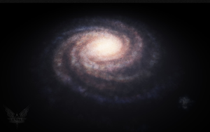

The Galaxy
Elite Dangerous has a vast 1:1 scale simulation of the Milky Way galaxy based on real scientific principles, current scientific data and theories. It includes around 400 billion star systems. The galaxy is modeled on current galactic charts. Planets and moons rotate and orbit with 1:1 scale in real-time thus constantly changing a system's environment. There are 42 Galactic Regions.
How It Was Done
The vast 1:1 scale Milky Way galaxy is based on real scientific principles, scientific data, star catalogues and theories. It's created using a mix of procedural generation and artist direction. It has realistic astrophysics and scale.
Around 400 billion star systems according to current scientific theories of star system formation with planets and moons that orbit and rotate. It includes well known systems like Sol and Alpha Centauri. Some systems have multiple stars.
Groundbreaking in that it's based on a lot of hard science with all sorts of star surveys that are fixed and merged to for the first time in gaming history compose a very consistent model of the Milky Way galaxy and it's rich enough to plot the night sky.
Cosmic phenomena, all different kinds of stars, star systems, black holes, detailed planets, moons, mountains, canyons, craters, planetary ring systems, star rise etc. Specially handcrafted overrides for 160,000 known stars in the night sky and planetary objects that we know and love. For example, our solar system Sol with Earth, the Moon and Mars. There are systems with recently discovered planets such as Trappist-1.
Lore
The official Elite: Dangerous Role Playing Game has in-depth lore about the universe of Elite: Dangerous. Here's a summary:
Cheap and faster than light travel has enabled humanity to expand across the stars. They've built colonies, cities, stations and empires. This led to the rise of galactic superpowers: the Federation, Empire and Alliance. The galaxy's vast wealth of minerals, water and life-bearing planets makes them wealthier every day. Such wealth of the major factions attracts powerful people who scheme daily to gain power.
The Middle-classes can afford spaceships like cars in the 20th century. This gives them tremendous freedom. Space trade is seldom hampered by politics. Pilots are encouraged to do all kinds of jobs such as supplying stations. Little has changed for those in the bottom of society since the old-Earth's dark ages. The planet-spanning mega corporations employ entire nations and rule unchecked over vast sections of the galaxy. Weapons are readily available and people are inclined to shoot first. The general lawlessness of space, inequality, greed of the galactic elite, navigational hazards and fierce creatures on planets make it a dangerous galaxy.